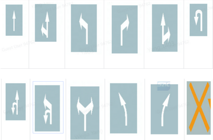
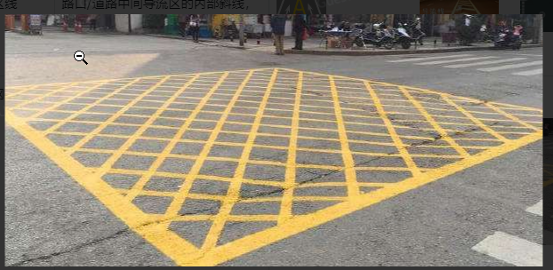
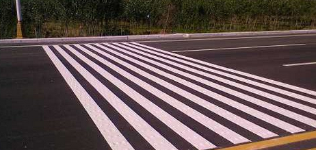

RoadMarker-The first batch of GDATA data mining needs
Data length needs to be collected
30s, 1Hz, the maximum interval between the frames caused by abnormal time synchronization and other reasons must not exceed more 0.5s。
Display data for numbers
Like the lane line
Collection scene description
Priority collection: POC data, reinterpret
Basic scene
|
Overview |
Subdivision |
tag-existing |
tag-new increase |
|
illumination |
Normal light/strong smooth light/strong backlight/street light/car light/darker light without light |
|
|
|
weather |
Sunny day/rain and snow days |
|
|
|
Self -car behavior |
Turn left and right, change to the left and right, Uhead -turn, join the Wait vehicle YAW angle change situation |
|
|
|
Road structure |
Cross intersection scenes, T -line intersection scenes, exchange entrances, gaps, forks/remittances, straight road sections of WAIT |
|
|
Try to be as little as possible: Straight scenes and dense scenes of traffic at the traffic at the perspective of vehicle driving and dense scenes
Collection category description
All subcaters cover all High Priority categories
Low and low priority class are collected as much as possible
|
Classification |
Subdivision class |
priority |
Diagram |
|
|
Common arrow category |
11 types of national standards+x prohibited symbols |
high |
 |
The tag model of the arrow marker line is currently not Whether HIGH excellent new increase is to be discussed XU Alfred (XC-AS/PJ-WIN-PER4) |
|
Very see category arrow |
Straight+left turn+U -turn Straighten+right turn+Uhead Left -turn+right turn+Uhead Other special combinations |
middle |
- |
|
|
Common ground line |
Stop zebra crossing Deceleration zone Suspension area |
high |
 |
|
|
Non -COMMON GROUND LINE |
Deceleration Stop the line Small the line Vehicle distance confirmation line wait |
middle |
 |
|
|
Other ground elements |
Word Small to make a logo Pedestrian horizontal reminder logo |
middle |
|